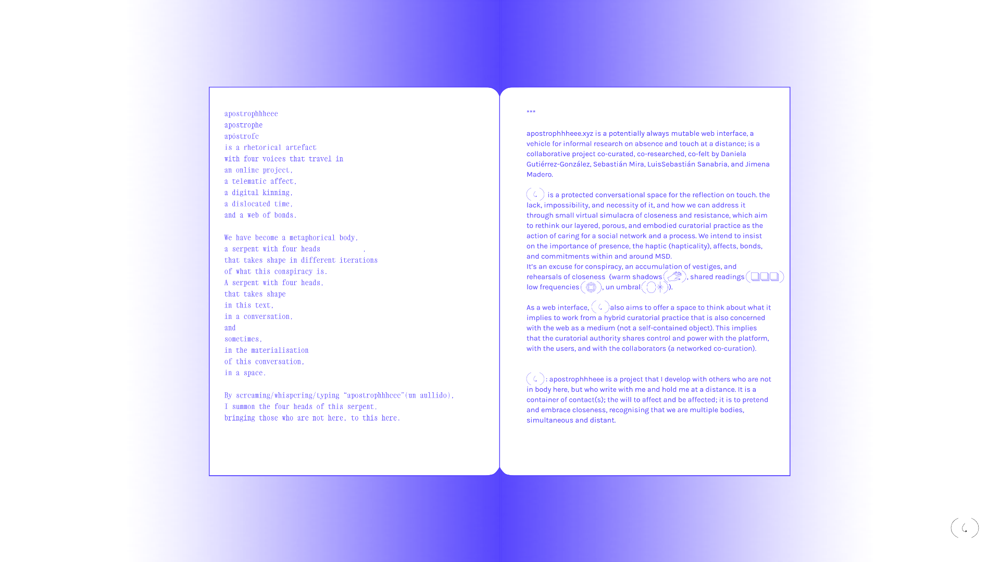
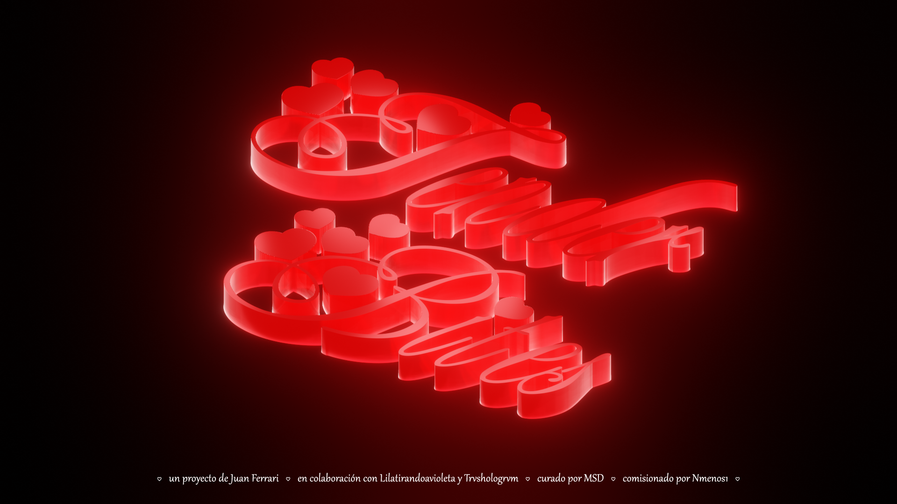
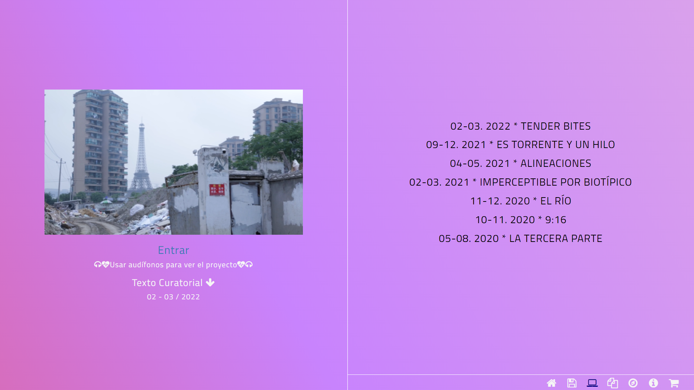
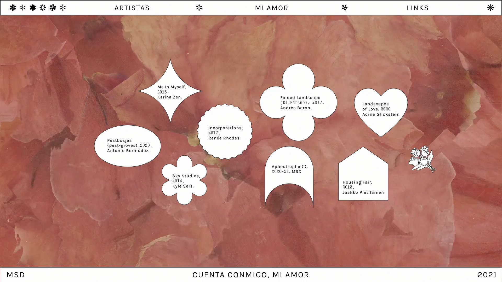
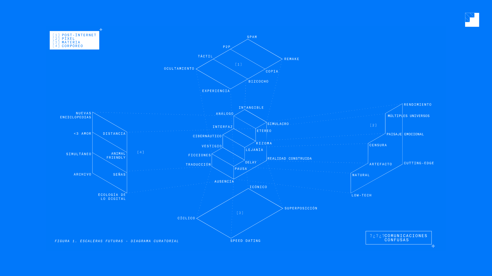
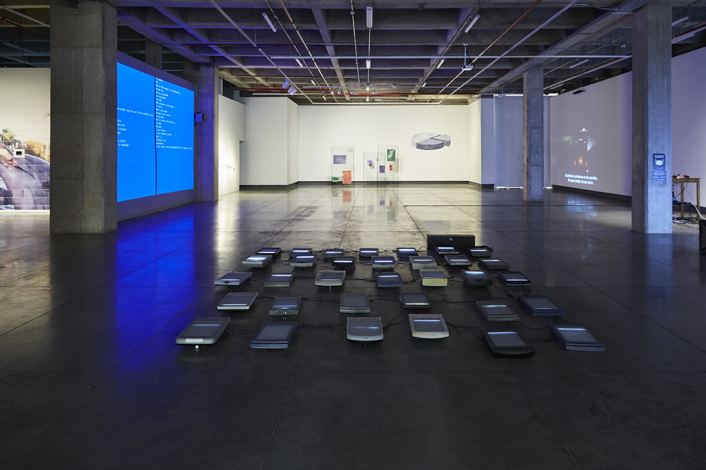
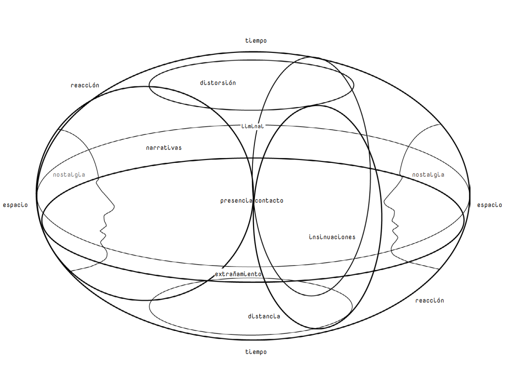
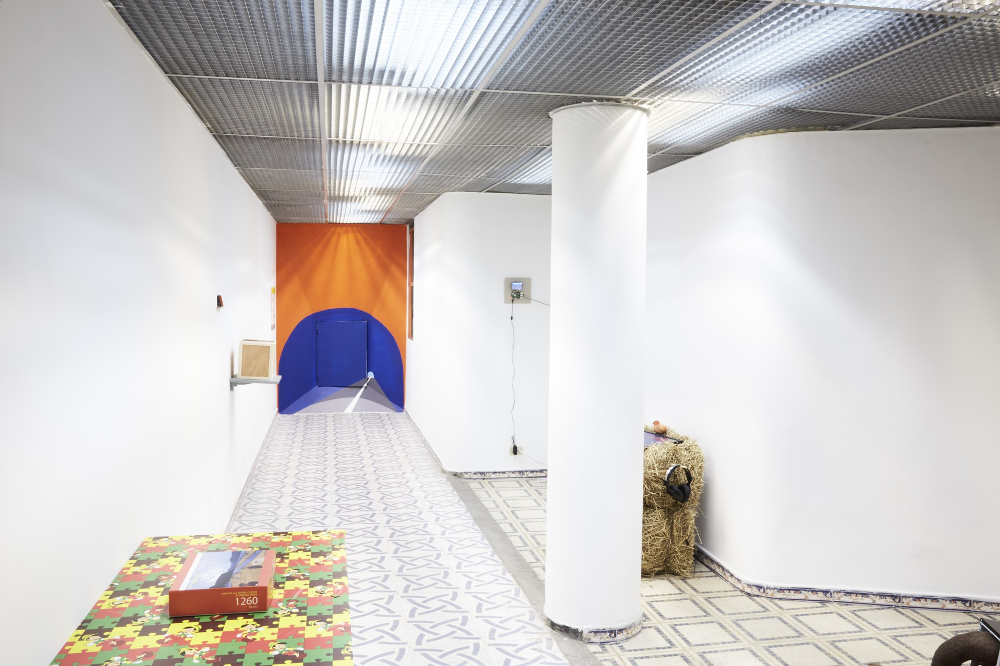
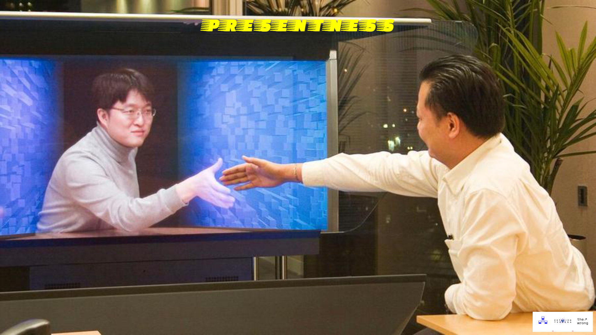

📆
↝ ('): Apostrophe

* 07.2022 | @apostrophhheee.xyz
↝ Tender Bites

* 02.2022 | @Nmenos1

↝ Cuenta Conmigo, Mi Amor

* 10.2021 | @GaleríaSantaFé
↝ Escaleras Futuras

* 08.2020 | @GaleríaSantaFé

↝ P R E S E N T N E S S

* 03.2020 | @EstaciónTerrena

* 11.2019 | @TheWrong

👥
Somos un grupo curatorial conformado por
Daniela Gutiérrez
 y
Sebastián Mira
y
Sebastián Mira
 , cuyo interés orbita alrededor del reino virtual y el mundo físico
en términos instalativos y escultóricos en las prácticas artísticas contemporáneas.
Trabajamos con formas de ocupación y emplazamiento que están on- y off-line, con sus respectivas manifestaciones y temporalidades.
Los procesos que presentamos como equipo indagan sobre experiencias digitales y prácticas de pantalla. Desde aproximaciones al paisaje (y sus manifestaciones virtuales),
a través del tiempo en simultaneidad (con rezagos), hasta reinterpretaciones del lenguaje (código y poesía), a las formas de habitar la wwweb,
buscamos abordar posibles definiciones y aplicaciones de vivir un momento en la distancia, o en delay.
, cuyo interés orbita alrededor del reino virtual y el mundo físico
en términos instalativos y escultóricos en las prácticas artísticas contemporáneas.
Trabajamos con formas de ocupación y emplazamiento que están on- y off-line, con sus respectivas manifestaciones y temporalidades.
Los procesos que presentamos como equipo indagan sobre experiencias digitales y prácticas de pantalla. Desde aproximaciones al paisaje (y sus manifestaciones virtuales),
a través del tiempo en simultaneidad (con rezagos), hasta reinterpretaciones del lenguaje (código y poesía), a las formas de habitar la wwweb,
buscamos abordar posibles definiciones y aplicaciones de vivir un momento en la distancia, o en delay.